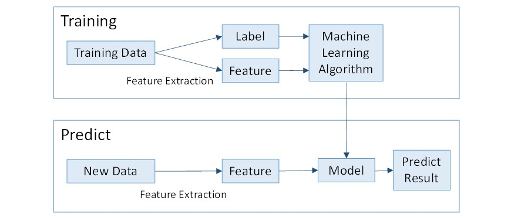
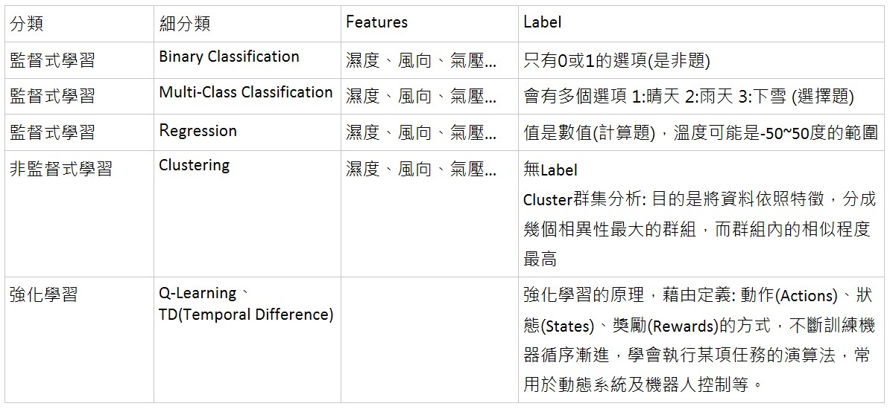
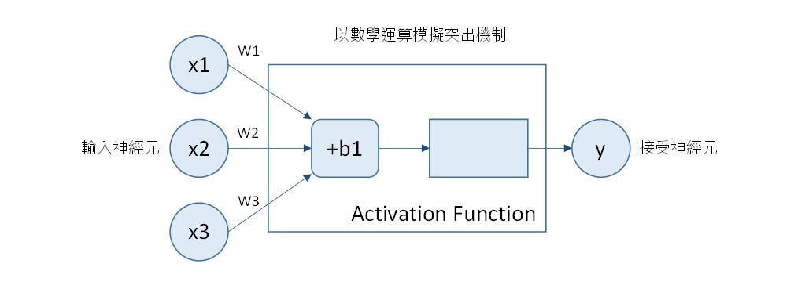
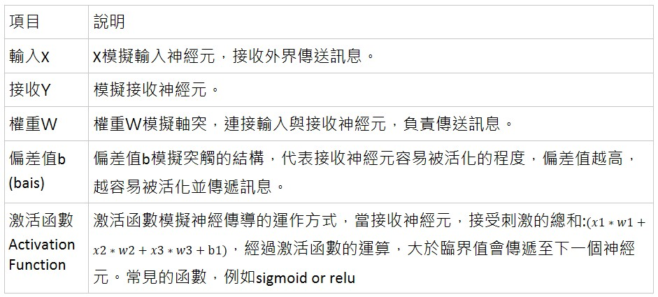

基本介紹
Machine Learning的Training Data主要是由Features, Label組成的
- Feature: 資料的特徵，像是濕度、風速、氣壓…
- Label: 資料的標籤，也就是我們預測的目標。 基本流程: 
Machine Learning 分類
- Supervised Learning(監督式學習)
- Unsupervised Learning(非監督式學習)
- Reinforcement Learning(強化學習) 
神經網路( Neural Network, NN )
- 以數學公式模擬神經元的訊息傳導
- Activation Function通常為非線性函數  $$y=activation function(x1∗w1+x2∗w2+x3∗w3+b1)$$ 
Neuron (神經元)
- 我們可將神經元看為一個複雜的函數，他有能力Fit複雜的數據。
- 優勢
- 擁有極大的參數量，他的容量很大，可避免Under-Fit
- 運算速度很快，容易平行化
- 訓練過程有快速而有效的方法。Back-propagation(反向傳播) & Stochastic gradient descent(隨機梯度下降)
- 傳統觀點是，如果參數量太大，模型就容易出現Over-fit。但目前的Neural Network可以在許多問題上避免Over-Fit
- 直觀地說，每個神經元是在做加權平均(Weighted Average)
$$ out = \sum_{i=0}^n (x_i * w_i) + b $$
Loss Function & Optimizer
- 神經網路的訓練過程是逐步調整神經網路每層的參數，讓神經網路的輸出Out趨近於期望輸出
- 需要衡量甚麼是趨近，可定義Loss Function，代表Out和期望輸出之間的誤差，然後訓練目標是最小化Loss Function的值LOSS
- Optimizer會根據LOSS和神經網路的情況，更新神經網路的參數，使得LOSS縮小
- 最原始的方法是隨機微調參數，然後重新計算損失。如果進步了，就保留這個微調。(這個方法效率很低) 更好的方法是利用梯度下降(gradient descent)，他會通過求偏導數算出往哪個方向調整參數是”最能使LOSS縮小的方向”，然後將參數朝這個方向移動一小步。
梯度下降(Gradient Descent)
任何參數w, 使用梯度下降訓練的公式都是: $$ w^{new} = w - \eta * \frac {∂LOSS}{∂w}$$
其中 η(eta) 稱為學習速度(learning rate)，是一個我們指定很小正數(例如 : 0.01)，類似於梯度下降的每一步的步長。而 ∂ 是求偏導數，∂LOSS / ∂w 稱為梯度(gradient)。
如果回想導數的定義，會看出上述公式可將w往最能快速減少LOSS的方向移動。
其他神經元操作的基本名詞
- Batch-Size : 就是每次調整參數前所選取的樣本(稱為mini-batch or batch)數量
- Epoch : 每學一遍數據集，就稱為一個Epoch
- 注意每一個epoch都須打亂數據的順序，使網絡受到的調整個具有多樣性。